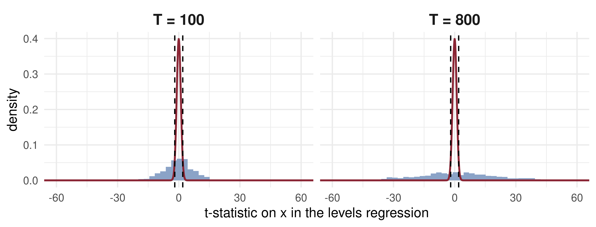
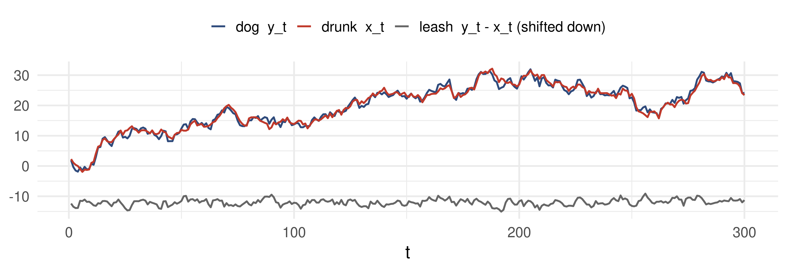
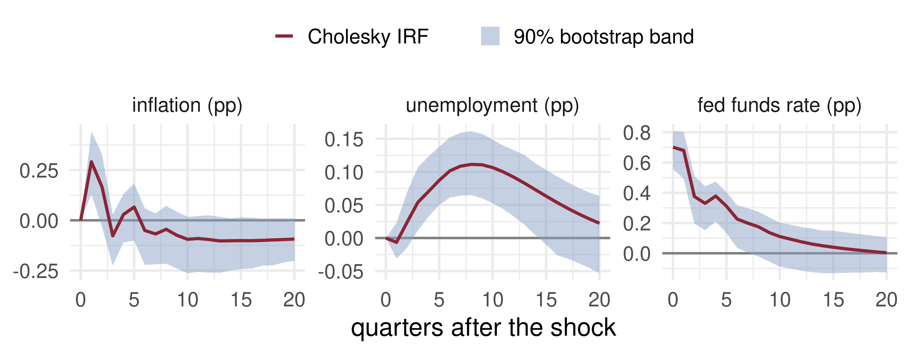
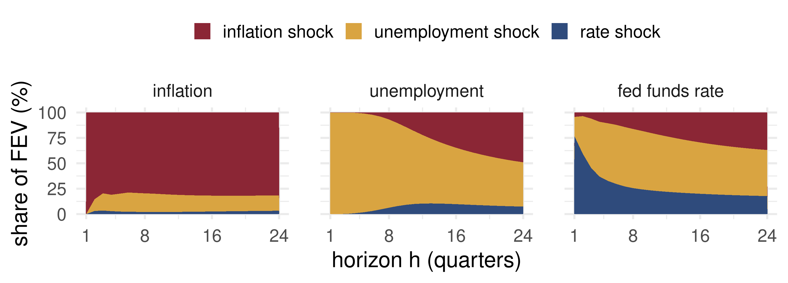

Lecture 14: Vector Autoregressions, Impulse Responses and Cointegration
Open lecture notes, after Stanislav Anatolyev’s course (2016)
⬅ Previous lecture: 13 · Markov Switching and State-Space Models
A short film with the intuition. Watch it before the slides, or after. Captions: CC button.
By the end of this lecture, you will be able to:
In the Hamilton filter for a Markov switching AR, what is the denominator of the update step, \(\sum_i f(x_t\mid s_t=i,I_{t-1})\Pr(s_t=i\mid I_{t-1})\)?
Lecture 13 ended with state-space models: one observed series, latent states behind it.
In Lecture 7 the Wold decomposition gave a univariate impulse response: the MA(\(\infty\)) weights of \(x_t\).
Today we model several series jointly. The questions become:
What does a monetary tightening do?
The central bank raises the policy rate by surprise. Inflation, unemployment and the rate itself all move, and each feeds back into the others.
A single equation cannot answer “what happens next quarter, and the quarter after?” because every variable is both cause and effect. We need a system in which each variable depends on the past of all of them.
For an \(m\times1\) vector \(x_t\), \[x_t=a_0+A_1x_{t-1}+\dots+A_px_{t-p}+\varepsilon_t,\qquad E(\varepsilon_t\mid I_{t-1})=0,\quad \operatorname{var}(\varepsilon_t\mid I_{t-1})=\Sigma .\] Each \(A_j\) is \(m\times m\). Row \(k\) of the system is a regression of \(x_{k,t}\) on \(p\) lags of every variable.
The errors \(\varepsilon_t\) are the one-step forecast errors (innovations). They are serially uncorrelated but correlated with each other: \(\Sigma\) is not diagonal.
Bivariate example: \(x_t=(\Delta m_t,\Delta p_t)'\), money growth and inflation.
Not in the 2016 notes: added from Hamilton (1994), ch. 11, and Lütkepohl (2005), ch. 2.
Stack \(\xi_t=(x_t',x_{t-1}',\dots,x_{t-p+1}')'\). Then \(\xi_t=c+F\xi_{t-1}+(\varepsilon_t',0,\dots,0)'\) with the companion matrix \[F=\begin{pmatrix}A_1&A_2&\cdots&A_{p-1}&A_p\\ I_m&0&\cdots&0&0\\ \vdots&&\ddots&&\vdots\\ 0&0&\cdots&I_m&0\end{pmatrix}.\]
The VAR is (covariance) stationary if every eigenvalue of \(F\) lies inside the unit circle; equivalently, all roots of \[\det\big(I_m-A_1z-\dots-A_pz^p\big)=0\] lie outside it. This is the vector version of the AR(\(p\)) root condition.
Not in the 2016 notes: added from Hamilton (1994), ch. 10.
Every equation has the same regressors \(z_t=(1,x_{t-1}',\dots,x_{t-p}')'\). Write \(x_t=Bz_t+\varepsilon_t\); then \[\hat B'=\Big(\sum_t z_tz_t'\Big)^{-1}\sum_t z_tx_t',\qquad \hat\Sigma=\frac1T\sum_t\hat\varepsilon_t\hat\varepsilon_t' .\]
Not in the 2016 notes: added from Hamilton (1994), ch. 11.
Fit VAR(\(p\)) for \(p=1,\dots,p_{\max}\) on a common sample and minimise \[\text{AIC}(p)=\log\det\hat\Sigma_p+\frac{2pm^2}{T},\qquad \text{BIC}(p)=\log\det\hat\Sigma_p+\frac{pm^2\log T}{T},\] \[\text{HQ}(p)=\log\det\hat\Sigma_p+\frac{2pm^2\log\log T}{T}.\]
The trade-off of Lecture 4 in matrix form: \(\log\det\hat\Sigma_p\) falls with \(p\), the penalty grows with the \(pm^2\) coefficients. BIC and HQ choose the true order with probability tending to one; AIC tends to overfit but often forecasts well.
Not in the 2016 notes: added from Lütkepohl (2005), ch. 4.
A stable VAR has the MA(\(\infty\)) form \(x_t=\mu+\sum_{s\ge0}\Phi_s\varepsilon_{t-s}\), with \(\Phi_0=I_m\) and \(\Phi_s=\sum_{j=1}^{\min(s,p)}A_j\Phi_{s-j}\).
Because \(\Sigma\) is not diagonal, “a shock to \(\varepsilon_1\) with \(\varepsilon_2\) fixed” never happens. Factor \[\Sigma=LDL',\qquad L \text{ lower triangular with unit diagonal},\quad D=\operatorname{diag}(\sigma_1^2,\dots,\sigma_m^2),\] and define \(v_t=L^{-1}\varepsilon_t\): orthogonal shocks with \(\operatorname{var}(v_t)=D\). Then \[x_t=\mu+\sum_{s\ge0}\Psi_sv_{t-s},\qquad \Psi_s=\Phi_sL .\]
This is the Cholesky (recursive) identification: the variable ordered first does not respond on impact to the shocks ordered after it.
Not in the 2016 notes: the factorisation is added from Hamilton (1994), ch. 11.
\[\underset{m\times m}{\mathrm{IRF}(h)}=\frac{\partial x_{t+h}}{\partial v_t'}=\Psi_h .\] Element \((j,i)\) is the response of variable \(j\), \(h\) periods later, to a unit orthogonal shock \(v_i\) at time \(t\).
For \(x_t=(\Delta m_t,\Delta p_t)'\) with \(\Delta m\) ordered first:
irf = {
const A = [[0.5, a12], [0.6, 0.5]];
let M = [[1, 0], [0, 1]]; const out = [];
for (let h = 0; h <= 20; h++) {
out.push({h, resp: M[0][0], v: "x₁ (own response)"}, {h, resp: M[1][0], v: "x₂ (cross response)"});
M = [[A[0][0]*M[0][0] + A[0][1]*M[1][0], A[0][0]*M[0][1] + A[0][1]*M[1][1]],
[A[1][0]*M[0][0] + A[1][1]*M[1][0], A[1][0]*M[0][1] + A[1][1]*M[1][1]]];
}
return out;
}
disc = 0.6 * a12
modulus = disc >= 0 ? 0.5 + Math.sqrt(disc) : Math.sqrt(0.25 - disc)Plot.plot({
width: 1100, height: 280, marginLeft: 78, marginBottom: 50,
style: {fontSize: "18px"},
x: {label: "horizon h"}, y: {label: "response to v₁", domain: [-0.8, 1.6], grid: true},
color: {range: ["#8b2635", "#2f4b7c"]},
marks: [Plot.ruleY([0]), Plot.lineY(irf, {x: "h", y: "resp", stroke: "v", strokeWidth: 3}),
Plot.dot(irf, {x: "h", y: "resp", fill: "v", r: 3})]
})html`<div style="font-size:28px"><b style='color:#8b2635'>x₁ own</b> and <b style='color:#2f4b7c'>x₂ cross</b> response · A = [0.5, a₁₂; 0.6, 0.5], Σ = I · largest |eigenvalue| <b>${modulus.toFixed(3)}</b> · roots are <b>${disc < 0 ? "complex: oscillation" : "real: monotone decay"}</b>${modulus >= 1 ? " · <b style='color:#8b2635'>not stable</b>" : ""}</div>`VAR(1) for \((\Delta m_t,\Delta p_t)'\): \(A=\begin{pmatrix}0.5&0.2\\0.3&0.4\end{pmatrix}\), \(\Sigma=\begin{pmatrix}1&0.5\\0.5&2\end{pmatrix}\).
Factor. \(L=\begin{pmatrix}1&0\\0.5&1\end{pmatrix}\), \(D=\operatorname{diag}(1,\ 2-0.5^2)=\operatorname{diag}(1,1.75)\). Check: \(LDL'=\Sigma\).
Responses. \(\Psi_0=L\); \(\ \Psi_1=AL=\begin{pmatrix}0.5+0.1&0.2\\0.3+0.2&0.4\end{pmatrix}=\begin{pmatrix}0.6&0.2\\0.5&0.4\end{pmatrix}\).
A money shock raises inflation by 0.5 on impact and 0.5 a quarter later; a price shock leaves \(\Delta m\) unchanged on impact and raises it by 0.2 after one quarter.
Granger. The (1,2) element of \(A\) is \(0.2\neq0\), so \(\Delta p\) Granger-causes \(\Delta m\); and \(0.3\neq0\), so \(\Delta m\) Granger-causes \(\Delta p\).
The \(h\)-step forecast error is \(x_{t+h}-E_tx_{t+h}=\sum_{s=0}^{h-1}\Psi_sv_{t+h-s}\). With orthogonal shocks, \[\operatorname{var}_t(x_{j,t+h})=\sum_{i=1}^m f_{ij}(h)\,\sigma_i^2,\qquad f_{ij}(h)=\sum_{s=0}^{h-1}(\Psi_s)_{ji}^2 .\] These are the diagonal elements of \(\operatorname{var}_t x_{t+h}\). The share of shock \(i\) in variable \(j\): \[\omega_{ij}(h)=\frac{f_{ij}(h)\,\sigma_i^2}{\sum_{k=1}^m f_{kj}(h)\,\sigma_k^2}\times100\%,\qquad \sum_i\omega_{ij}(h)=100\% .\]
Example above, \(h=2\), \(j=\Delta m\): \(f_{11}=1^2+0.6^2=1.36\), \(f_{21}=0^2+0.2^2=0.04\). Share of the money shock \(=\dfrac{1.36}{1.36+0.04\times1.75}=\dfrac{1.36}{1.43}=95.1\%\).
A <- matrix(c(0.5, 0.2,
0.3, 0.4), 2, byrow = TRUE)
Sigma <- matrix(c(1, 0.5, 0.5, 2), 2)
C <- t(chol(Sigma)) # Sigma = C C', C lower triangular
L <- C %*% diag(1 / diag(C)) # unit diagonal
D <- diag(diag(C)^2) # Sigma = L D L'
Psi <- list(L, A %*% L) # Psi_0, Psi_1
f <- Reduce(`+`, lapply(Psi, function(P) P^2)) # f_ij(2), rows = variable j
share <- 100 * (f %*% D) / rowSums(f %*% D)
dimnames(share) <- list(c("dm", "dp"), c("v_m", "v_p"))
Psi_01 <- cbind(Psi[[1]], Psi[[2]]); colnames(Psi_01) <- c("Psi0_m", "Psi0_p", "Psi1_m", "Psi1_p")
list(D = diag(D), Psi_0_and_Psi_1 = Psi_01, FEVD_h2_percent = round(share, 1))$D
[1] 1.00 1.75
$Psi_0_and_Psi_1
Psi0_m Psi0_p Psi1_m Psi1_p
[1,] 1.0 0 0.6 0.2
[2,] 0.5 1 0.5 0.4
$FEVD_h2_percent
v_m v_p
dm 95.1 4.9
dp 19.8 80.2Definition
\(\Delta m\) does not Granger-cause \(\Delta p\) (\(\Delta m\overset{GC}{\not\to}\Delta p\)) if \[E(\Delta p_{t+1}\mid \Delta p_t,\Delta p_{t-1},\dots,\Delta m_t,\Delta m_{t-1},\dots)=E(\Delta p_{t+1}\mid \Delta p_t,\Delta p_{t-1},\dots).\]
In a VAR: all \(p\) coefficients on lagged \(\Delta m\) in the \(\Delta p\) equation are zero. Test this with an \(F\) (or Wald) statistic, \(F\sim F(p,\,T-mp-1)\) approximately.
It is a statistical notion, not an economic one. Stock prices Granger-cause dividends, because prices are forward-looking; economically, it is expected dividends that determine prices.
A VAR(1) has \(A=\begin{pmatrix}0.7&0\\0.5&0.2\end{pmatrix}\) and \(\Sigma=\begin{pmatrix}1&0.3\\0.3&1\end{pmatrix}\), with \(x_1\) ordered first.
Let \(x_t,y_t\sim I(1)\) and run \(y_t=\beta x_t+\varepsilon_t\). There are two possibilities.
In case 1 the \(t\)-statistic does not converge to \(N(0,1)\); it diverges at rate \(\sqrt T\), and \(R^2\) converges to a random variable instead of to zero (Phillips, 1986). More data makes the illusion stronger.
spurious <- function(n, reps = 1000) {
out <- replicate(reps, {
x <- cumsum(rnorm(n)); y <- cumsum(rnorm(n)) # independent I(1)
s_lev <- summary(lm(y ~ x)); s_dif <- summary(lm(diff(y) ~ diff(x)))
c(t_lev = s_lev$coefficients[2, 3], R2_lev = s_lev$r.squared,
t_dif = s_dif$coefficients[2, 3])
})
c(T = n, reject_levels = mean(abs(out["t_lev", ]) > 1.96),
median_R2 = median(out["R2_lev", ]), median_abs_t = median(abs(out["t_lev", ])),
reject_differences = mean(abs(out["t_dif", ]) > 1.96))
}
sims <- t(sapply(c(50, 100, 200, 400, 800), spurious))
round(sims, 3) T reject_levels median_R2 median_abs_t reject_differences
[1,] 50 0.668 0.166 3.092 0.053
[2,] 100 0.763 0.192 4.826 0.056
[3,] 200 0.807 0.156 6.042 0.043
[4,] 400 0.894 0.168 8.966 0.054
[5,] 800 0.904 0.156 12.147 0.043A nominal 5% test rejects two times in three at \(T=50\) and nine times in ten at \(T=800\); the median \(|t|\) grows like \(\sqrt T\). In first differences it rejects about 5% of the time, as it should.

The red curve is the \(N(0,1)\) the textbook test assumes, squeezed inside the dashed lines. The actual spread is many times wider, and grows by about \(\sqrt8\approx2.8\) from \(T=100\) to \(T=800\).

Each wanders like a random walk, but the leash keeps the distance \(y_t-x_t\) stationary: \(x_t,y_t\sim I(1)\) while \(y_t-\beta x_t\sim I(0)\) with \(\beta=1\). That is cointegration.
Known \(\beta\), implied by theory:
Unknown \(\beta\), to be estimated. Money demand: \[m_t-p_t=\alpha_1+\alpha_2y_t+\alpha_3r_t+I(0).\]
📈 The question
A VAR in inflation, unemployment and the federal funds rate, in the spirit of Stock and Watson (2001).
📊 The data
Series: CPI (CPIAUCSL), unemployment rate (UNRATE), effective fed funds rate (FEDFUNDS), FRED
Period: 1960Q1–2007Q4, quarterly averages; ends before the zero lower bound
\(\pi_t=400\,\Delta\log\text{CPI}_t\); ordering \((\pi_t,u_t,R_t)\)
qavg <- function(id) { z <- read.csv(paste0("data/", id, ".csv")); d <- as.Date(z$observation_date)
tapply(z[[id]], paste(format(d, "%Y"), (as.numeric(format(d, "%m")) - 1) %/% 3 + 1), mean) }
cpi <- qavg("CPIAUCSL"); un <- qavg("UNRATE"); ff <- qavg("FEDFUNDS")
Y <- cbind(infl = 400 * diff(log(cpi)), u = un[-1], R = ff[-1]) # 1960Q1-2007Q4
m <- ncol(Y)
var_ols <- function(Y, p) { # OLS equation by equation
n <- nrow(Y); Z <- cbind(1, do.call(cbind, lapply(1:p, function(j) Y[(p + 1 - j):(n - j), ])))
X <- Y[(p + 1):n, ]; B <- solve(crossprod(Z), crossprod(Z, X)); E <- X - Z %*% B
list(B = B, E = E, Z = Z, X = X, Sigma = crossprod(E) / nrow(E), p = p) }
crit <- sapply(1:6, function(p) { f <- var_ols(Y[(7 - p):nrow(Y), ], p); Tn <- nrow(f$E)
ld <- log(det(f$Sigma)); c(AIC = ld + 2 * p * m^2 / Tn, BIC = ld + log(Tn) * p * m^2 / Tn,
HQ = ld + 2 * log(log(Tn)) * p * m^2 / Tn) })
p <- which.min(crit["BIC", ]); fit <- var_ols(Y, p)
granger <- function(fit, cause, eq) { # F test: lags of `cause` out of `eq`
drop <- 1 + (0:(fit$p - 1)) * m + cause; y <- fit$X[, eq]
rss <- function(Z) sum(lm.fit(Z, y)$residuals^2); df2 <- nrow(fit$Z) - ncol(fit$Z)
F <- ((rss(fit$Z[, -drop]) - rss(fit$Z)) / fit$p) / (rss(fit$Z) / df2)
pf(F, fit$p, df2, lower.tail = FALSE) }
list(order_chosen = c(AIC = which.min(crit["AIC", ]), BIC = p, HQ = which.min(crit["HQ", ])),
granger_p_values = c(R_to_infl = granger(fit, 3, 1), infl_to_R = granger(fit, 1, 3),
u_to_R = granger(fit, 2, 3)) |> signif(2))$order_chosen
AIC BIC HQ
6 3 3
$granger_p_values
R_to_infl infl_to_R u_to_R
2.7e-02 9.3e-07 4.5e-08 BIC and HQ choose \(p=3\); the VAR(3) is used below. Small \(p\)-values reject Granger non-causality in all three directions.

What the data say: after a one-s.d. rate shock the rate decays over about two years and unemployment rises, peaking after two years, as theory predicts. Inflation rises at first and turns negative only after six quarters: the “price puzzle”. A three-variable Cholesky VAR omits information the Fed reacted to (commodity prices, expectations), so part of the “shock” anticipates inflation.

Each panel stacks \(\omega_{ij}(h)\) over the three shocks to 100%. Inflation is driven mostly by its own shock; beyond a year, unemployment shocks carry the largest share of the rate’s forecast errors: the systematic reaction of policy to the real economy.
In a bivariate VAR(2) for \((y_t,z_t)\), which restriction says \(z\) does not Granger-cause \(y\)?
For variable \(j\) at horizon \(h\), \(f_{1j}(h)\sigma_1^2=3\) and \(f_{2j}(h)\sigma_2^2=1\). What is the share of shock 2 in its forecast error variance?
\(x_t\) and \(y_t\) are independent random walks, \(T=1000\). You regress \(y_t\) on \(x_t\) in levels. What do you expect?
| VAR(\(p\)) | \(x_t=a_0+\sum_{j=1}^pA_jx_{t-j}+\varepsilon_t\), \(\operatorname{var}\varepsilon_t=\Sigma\) |
| Stationarity | \(\det(I_m-A_1z-\dots-A_pz^p)\neq0\) for \(\lvert z\rvert\le1\) |
| Lag choice | \(\text{BIC}(p)=\log\det\hat\Sigma_p+pm^2\log T/T\) |
| Orthogonal shocks | \(\Sigma=LDL'\), \(v_t=L^{-1}\varepsilon_t\), \(\Psi_s=\Phi_sL\) |
| IRF | \(\mathrm{IRF}(h)=\partial x_{t+h}/\partial v_t'=\Psi_h\) |
| FEVD | \(\omega_{ij}(h)=f_{ij}(h)\sigma_i^2/\sum_kf_{kj}(h)\sigma_k^2\), \(f_{ij}(h)=\sum_{s<h}(\Psi_s)_{ji}^2\) |
| Cointegration | \(x_t,y_t\sim I(1)\), \(y_t-\beta x_t\sim I(0)\) |
Next lecture: Volatility: ARCH and GARCH.
Time Series Econometrics — VAR, IRF and Cointegration